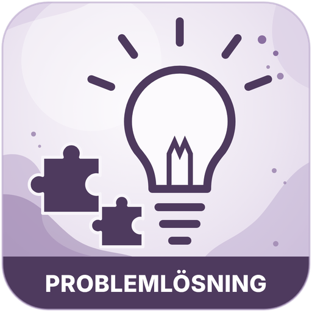

Mattekompassen
Örtagårdsskolan 7–9
Startsida
Åk 7
Åk 8
Åk 9
Ämnesord på olika språk
Bedömning

ÅK 9 · MATEMATIK Z
Problemlösning
Materialet kommer snart
Här lägger läraren upp problemlösning för åk 9.
← Tillbaka till åk 9